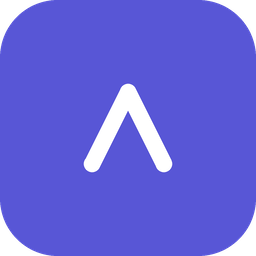

Arlo AI Analyzer
See where your AI coding tokens and dollars go — on your Mac, from your own logs.
- Reads the logs you already haveClaude Code and Codex CLI session logs, with read-only access to the folders you choose.
- Tokens, cost and context, per sessionDaily spend, cache usage, context-window peaks and compactions, model by model.
- Local-firstYour sessions never leave your Mac. The only network request is an anonymous daily download of the public model price list, and you can turn it off.